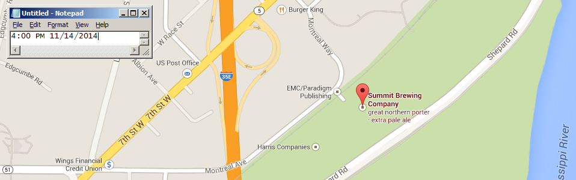
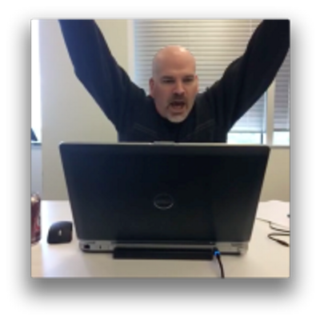
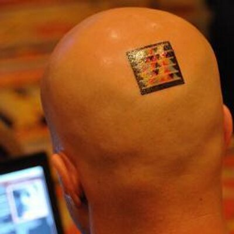
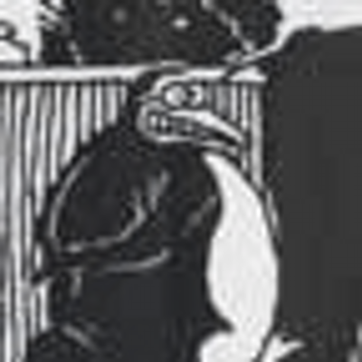
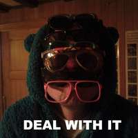
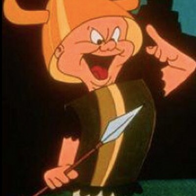
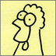
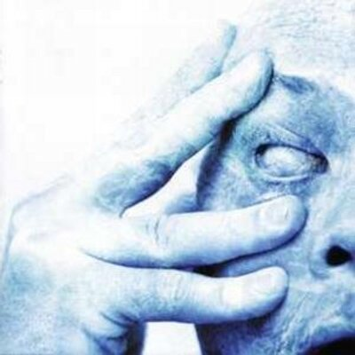

About.txt
NotepadConf: the textiest conference you'll attend! See the latest technological advancements in plaintext editing. Meet the luminaries of the market and some sneak peaks at what's coming next!
NotepadConf is the premier technology conference for Notepad.exe users and text enthusiasts.
Follow @notepadconf for updates
"Reading maketh a full person. Programming in Notepad.exe maketh an exact person."
Francis "Two Strips" Bacon
Location.txt
Summit Brewing Company 910 Montreal Cir St Paul, Minnesota, United States
Speakers.txt
We are still confirming and finalizing speakers this list is subject to change.
-
Syntax Highlighting is for Suckers
Todd H Gardner @toddhgardner
Microsoft Notepad MVP Contender, plain-text wrangler.
-

Advanced Pasting Techniques
Jason Bock @jasonbock
Microsoft Notepad Insider, Copy-Paste maverick.
-
To Monospace or Not To Monospace: A Guide to What Typeface You Should Be Using
Tim G Thomas @timgthomas
Microsoft Notepad Insider, Comic Sans Lover.
-
.TXT: NoSQL before it was cool
Kristina Durivage @gelicia
Text-Storage Guru Extraordinaire.
-
H, J, K, L are Dead: Upgrading your personal editing process to the arrow key era
Daniel Feldman @d_feldman
Microsoft Notepad Insider, Recovering IDE User.
-

A Look at Notepad vNext
Adam Microsoft @codel8r
Microsoft Notepad Program Manager.
-
Anything can be opened with notepad
Mattias Karlsson @devlead
Advanced Notepad developer and VIM opponent.
-

A Lap Around the Notepad Menu Bar
Mike Hodnick @kindohm
Creator of OpenNotepad, the Notepad.exe port to OSX
-
Ten Ways Exiting Notepad is Better Than Exiting Vim
Jim Holmes @aJimHolmes
Author of "Reading Twitter with Notepad"
-
Modern Retro Notepad: Locally-Sourced Hand-Crafted Artesian Text
David Neal @reverentgeek
Acclaimed speaker on Notepad productivity
-
ASCII Art in Notepad
Jenna Pederson @jennapederson
Notepad Evangelist
-
Hacking Notepad.exe : Using a hex editor to change the blue icon and more
Jake Good @gooberdlx
Notepad Hacker
-
Notepad internationalization - It's the BOM!
Brian Repko @BrianRepko
Notepad Architect and Agile pracitioner, advocating lean processes managed by Notepad.
-
Increasing Productivity With Notepad & .LOG
Nik Molnar @nikmd23
Host of the NotepadWeekly Podcast and n.exe Advocate.
-
The Future Roadmap of Notepad, everything we plan to do ever.
Caleb Jenkins @CalebJenkins
Notepad Luminary and Tarot Card Reader
-

Workshop: Integrating Spell Checking Into Notepad.
Ivan Towlson @ppog_penguin
Attendees should bring a copy of Notepad, and a dictionary.
-
Animation with Notepad and Symbola.ttf!
William Ockham @WilliamOckhamTx
Symbola added the watchface icons from Unicode 7.0. If you enter one per line in correct order and size the window properly, you can create the ever popular "clock with spinning hands" to signal the passage of time. All by just moving the thumb on the scrollbar.
-
Notepad Development on the Mac using Parallels
Jaim Zuber @jaimzuber
OSX Notepad Pioneer and OpenNotepad Contributor
-
Making Slideshows with Notepad.
Brian Morearty @BMorearty
You can use asterisks OR dashes for bullets. Need nesting? There's your spacebar.
-
Migrating to Notepad from edlin.exe
Rohn Blake @Rohn
Notepad.exe Labs Academic and Researcher.
-
Notepad.exe: the Cornerstone of iOS Swift Development
Bob MacNeal @BobMacNeal
Developer and Writer, Notepad is the only tool I can use for both!
-
My Name Is MUD: Building Games in Notepad.exe
James Kovacs @JamesKovacs
Combine the power of Notepad.exe and AutoHotKey to build a Multi-User Dungeon. Not only will Notepad.exe be used to write the game, Notepad.exe will host the game!
-
Indypad - Becoming a Freelance Notepad Consultant
Chris Massey @camassey
Learn this one weird trick for becoming a Notepad consultant. MS Word users hate this!
-
Workshop: Advanced Arrow Development
James Campbell
focus on usage of hyphens, equality indicators, carets, Vs and pipes!
-
Advanced techniques: Stopping Shutdown with your Favorite Editor.
Peter Morlion @petermorlion
Is it stopping, or slowing down? An hour to verify that question should be sufficient.
-
Unformatting with Notepad: Bridging the Gap to Format Freedom
Bryan Rhea @brheal
Notepad Typesetter
-
Word, Word, Word: Word Is for the Birds: How too many damn options stunt creativity.
Jesse Pickrain @jpickrain
Notepad Marketing Lead. Concerned Writer.
-
Roundtable: To Wrap Or Not To Wrap
Daryl Davis @easthollow
A Panel Discussion of text-wrapping, the illusion of whitespace, and spaces vs tabs.
-
Agile and SCRUM best practices with Notepad
Youri Ackx @YouriAckx
No more fiddling with post-its. Successfully manage your project and your team with Notepad. Build your burndown chart and scrum board the smart way.
-
Typographic Variations in Notepad: Seeing complex structures in plain text
George Sanchez @petabyteflop
Notepad Data Scientist and Astrologer
-

.txt.bak: Advanced Version Control
Vincent Alsteen @_v1nc3nt_
Notepad Insider, File system enthusiast, Recovering git user.
-

nowrap.txt.min: Managing your code with the horizontal scrollbar
Eric Robbins @ThayerAvenue
Save valuable server space while CTRL+scrolling through the development process.
-

Persisting textual changes to Notepad documents by saving.
Murray Carr @onekilo79
Notebook archivist.
-

From "Bush hid the facts" to the secrets of "Ctrl-Backspace".
Igal Tabachnik @hmemcpy
Notepad is an entire world hidden deep within! Want to learn more about Notepad Secrets?
-
The Magic of Plaintext
Zachary Johnson @zacharyjohnson
A tale of exploration and high adventure 20 years in the making, with a poignant and chilling conclusion.
-
Devops for the Notepad.exe Professional: Batch file scripting.
Zach Lendon @zachlendon
:: Notepad.exe is a robust environment from which you can manage your AWS cluster or your Frontpage Server extensions. if %devops% NEQ '0' you need to be at this session.
-
XML, Markdown, and JSON: Are they *truly* plaintext?
David Bock @bokmann
Sure, they look like plain text, but there's all kinds of "extra" meaning in there. Do these formats truly live up to the pragmatic tip: "keep knowledge in plain text"?
Call for Proposals is now closed, but share your topics anyway for Reject.txt in the Comments!
Sponsors.txt
Unobtainium_Sponsor.txt

Adamantium_Sponsor.txt
Platinum_Sponsors.txt

Conduct.txt
Notepadconf reflects the natural equality of Notepad.exe. We are like characters--all are equal. Changing the font, color, or style of any character changes them all.
Do onto each character as you would do onto all of them.
Thank you.